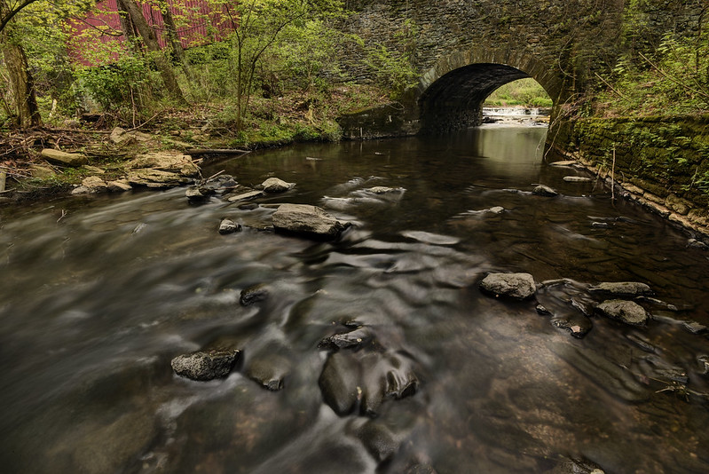

The boy looks at the small creek. The creek is shallow, with stones protruding out of the water. The boy:
Steps across the stones.
Puts his fingertips in the water.

From Flickr, "Creek" George Korzik, 2017.
source
Start over